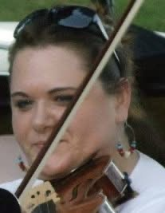
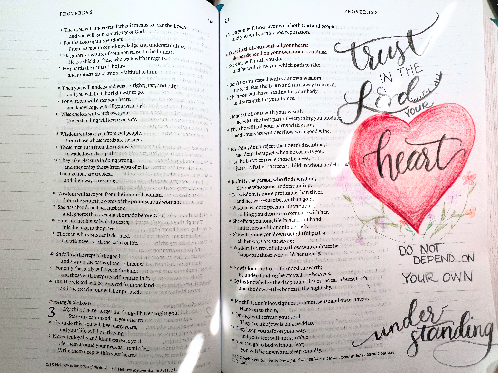
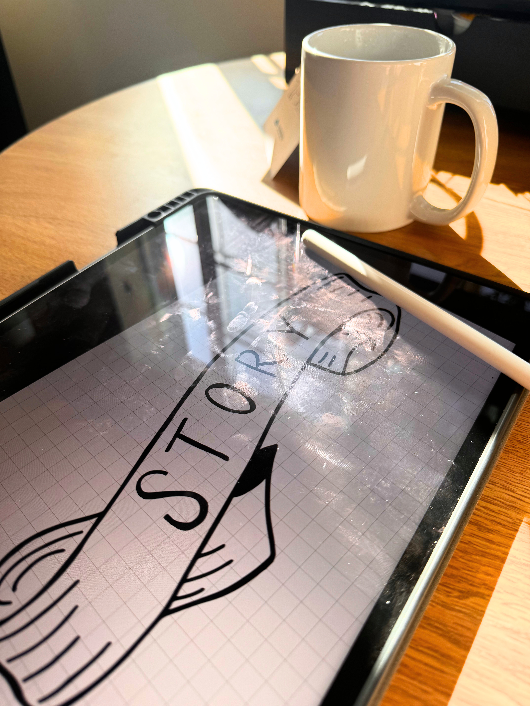
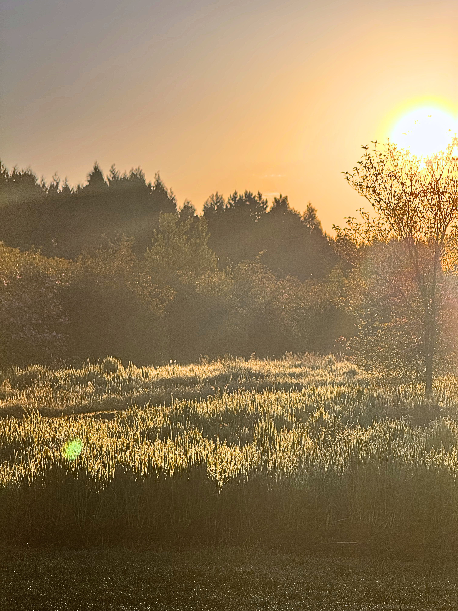
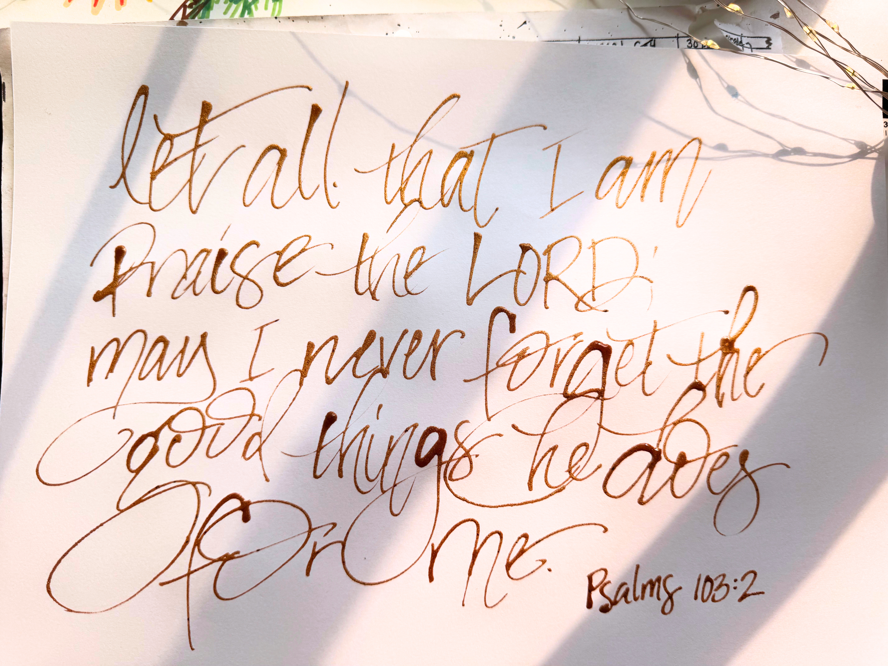

Creative Worship
Using Your God-Given Creative Talents to Worship and Honor Him
10/15/2026 by Melissa Hundley

Once upon a time...many, MANY years ago...I started playing music.
Although the picture below is a bit misleading, the first
instrument I learned was viola. For a couple of years, I had
wanted to learn to play the clarinet, or the flute, or the
clarinet...(it changed almost weekly), but I would have had to
wait until 6th grade to start...but in 5th grade, I could start
learning a stringed instrument at school (that should tell you how
old I am...we had strings and band class in public schools)...
I was impatient, so I decided I wanted to learn a stringed
instrument. There was the added bonus that the district had some
instruments I could use to learn on and we wouldn't have to spend
any money to buy an instrument.

I very proudly announced one day that I was going to take the
strings class...and very quickly started hearing little jokes
about squeaky violins...but I had a plan...
I wasn't going to learn the violin...I was going to learn the
viola! Ha! Now my family couldn't make jokes about how much I
squeaked!
What I had no knowledge of at the time was viola jokes...
Having the internet at home was a relatively new thing at the time
(again, I'm older than you might think...), but my dad took it
upon himself to find all the viola jokes that ever existed and
print them out to share with me...
Long story short (because viola jokes are not the point of this
blog...), I learned to play the viola, and was quite good and have
even been able to play professionally for a few summers.

Now to the point...creative worship. Honestly, it's just worship. It's giving honor and glory to God, our creator, because He deserves it.
That's it...nothing more, nothing less. God deserves our worship.
I used to think that since God gave me the gift of musical creativity, I owed it to Him to play perfectly. Don't get me wrong, I do believe that we should offer our best to God in worship, but He does not demand perfection from us. Regardless of what instrument I was playing, there was a season in life where I would beat myself up for all the mistakes I made while playing or singing at church...becasue I knew I could do better - so why would I offer anything less than my best to God?
Don't worry...I'm better now

But worship isn't just about music.
We can worship God in everything we do. Whether that's in our jobs, our hobbies, or even in our relationships. Worship is a lifestyle...it's a choice. When I sit down to create a new calligraphy design, I try to start with a prayer. Sometimes this is a prayer of thanksgiving for the beauty of God's creation (like when I was recently at the Oregon coast and the view outside my window was beautiful).
I was able to take that spirit of thanksgiving and create a design that reflected that beauty. In this case, I was at the coast to play bass with a worship team for a women's conference. Something that I absolutley LOVE to do! It was a weekend of getting to worship God through my musical gifts...and that's part of my story; and where this design came from.

We can also worship God through the way we capture His creation in photographs. I am by no means a professional photographer, but I do live in place that lends it self to beautiful landscape photos. I love to open the window and see the morning dew sparkling with the rising sun, or the turning of the leaves as summer turns to fall (yes, I'm already missing my warmer and longer days). Our God is a creator. He created the world around us and He created it beautifully!

I still have moments where I can feel discouraged about a missed note, or a piece of art that didn't turn out exactly how I envisioned it...but I know that the attitude I had in creating that artwork, or playing that song is far more important. Keeping my focus on God and offering Him my praise for the gifts He has given me is far more important.
The point I'm hoping to make is that regardless of what creative gifts you may (or may not think) you have, God created you in a unique way to be able to worship Him. Maybe you're a songwriter and you write songs thanking Him for the ways He has provided for you when times were tough. Maybe you're a writer and you write a story or poem about the beauty of creation. Maybe your a musician and you play or sing a song because it reminds you of something God has done in your life and you want to honor Him.
It doesn't matter how you worship God...what matters is that you simply worship Him. A friend of mine would always remind me to "just worship." I still get in my head (especailly when it comes to music), but when I turn the analytical side of my brain off and let myself just worship God, it's such a beautiful connection with God. I never regret it, I almost never care if I played a wrong note, or if a drawing didn't turn out exactly as I had planned. The reward of spending time with my Savior is so much more fulfilling than playing a song perfectly, or creating the most amazing design.
When I spend time with God creating...I can tell when I look at the final result.
I want to challenge you to spend time today in worship. In any form. Invite God into that time and lean into the wonder of Him.
Worship Him for all He has done for you.
Worship Him for His creation.
Worship Him because He deserves your praise.
